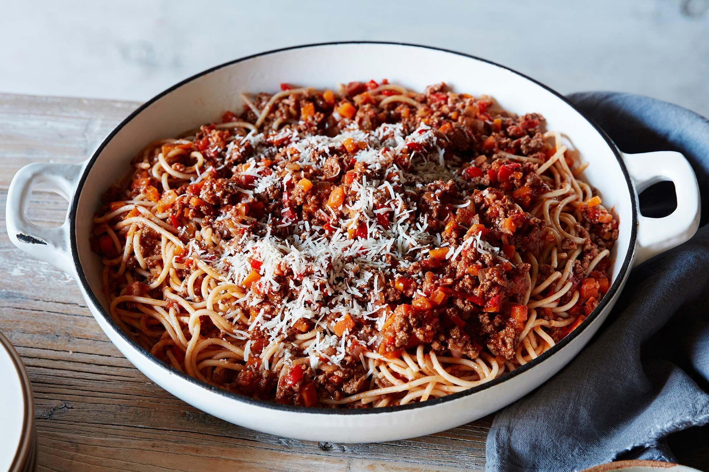

Spaghetti Bolognese
- 1 pound spaghetti
- 1/2 pound ground beef
- 1/2 cup chopped onion
- 1/2 cup chopped carrot
- 1/2 cup chopped celery
- 1 can (28 ounces) crushed tomatoes
- 2 tablespoons olive oil
- 2 cloves garlic, minced
- 1 teaspoon dried basil
- Salt and pepper to taste
- Cook spaghetti according to package instructions.
- In a large skillet, heat olive oil over medium heat. Add onion, carrot, celery, and garlic and cook until softened, about 5 minutes.
- Add ground beef and cook until browned, about 5 minutes.
- Add crushed tomatoes, basil, salt, and pepper and simmer for 20 minutes.
- Serve spaghetti with Bolognese sauce on top.